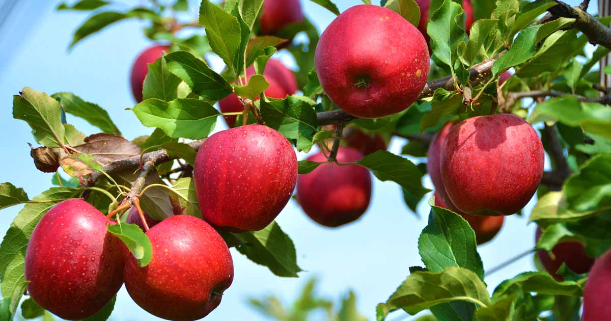

Fresh, Crispy, Heavenly.
100% Organic, vivid varieties of apples grown in Kashmir aka The Heaven of Earth.
ABOUT US
Apples are one of the most popular and delicious fruits worldwide, known for their crisp texture, refreshing taste, and impressive health benefits. Originating from the Central Asian region, apples have been cultivated for thousands of years and are now grown in various varieties across the globe.Rich in vitamins, minerals, and fiber, apples are a powerhouse of nutrition. They are an excellent source of Vitamin C, potassium, and antioxidants, which help boost immunity, promote heart health, and support digestive wellness. With their natural sweetness and versatility, apples can be enjoyed fresh, juiced, baked, or cooked in a variety of dishes.Whether you’re looking for a snack that satisfies your sweet tooth or an ingredient to add flavor and nutrition to your meals, apples are a perfect choice. Discover the different varieties, learn about their unique tastes and uses, and explore delicious apple recipes on our website!
VARIETIES
Amber
This red, medium-sized fruit becomes fully ripe in mid-October. It is mostly grown in Shopian and Kulgam.
American Trel
A small, rounded, very crispy and sweet fruit variety that ripens in mid-September.

Red Delicious
A very popular and widely cultivated variety of apple that ripens in mid-September. Its flesh is greenish white, grainy and juicy.
Maharaej
A large apple with red and green color. It tastes a bit sour but sweetens with time and is available by late October.

Hazratbael
A quickly perishable variety that ripens in early July. It is the oldest variety of apples cultivated in the valley and is mostly consumed domestically
Golden Delicious
A variety with comparatively longer shelf life, it is crispy, juicy and has thick greenish-white flesh which turns golden upon ripening. It is available till January.
OUR SERVICE

Fresh
We deliver fresh apples with a 100% guarantee of freshness.

Fast
We deliver your orders as fast as possible, delivery procedure begins as soon as apple is plucked from tree.

Satisfying
We guarantee 100% customer satisfaction. We do our best to make your purchase experience smooth. But if we mess up somehow you will get compensated for every inconvenience.